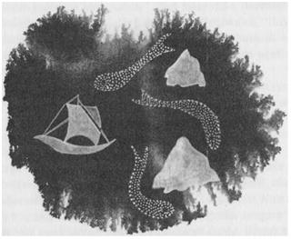

SEKİZ: AVCI

Ged, güneş doğmadan önce, kış karanlığında, Re Albi'den aşağı doğru yola koyulmuş ve öğleden önce Gont Limanı'na varmıştı. Ogion, Ged'e, süslü Osskil giysileri yerine, temiz Gont tozlukları, gömleği, deri yeleği ve keten çamaşırlar vermişti ama Ged yine de, kenarı pellawi kürkü kaplı, o soylulara yaraşır cübbesini, kış yolculuğu için saklamıştı. Sırtında bu cübbeyle, elinde yalnızca boyu kadar kara bir asa, Şehir Kapısı'na geldi. Kabartma ejderhalara dayanmış aylak aylak duran askerlerin, Ged'in bir büyücü olduğunu anlaması için pek akıllı olmalarına gerek yoktu. Mızraklarını yana çekerek, soru bile sormadan Ged'i içeri aldılar. Caddeden yürüyüp giderken de arkasından baktılar.
Rıhtımda ve Denizciler Loncası Evi'nde, kuzeye veya batıya, Enlad'a, Andrad'a veya Oranea'ya giden gemi olup olmadığını sordu Ged. Herkes ona, Gündönümü’ne çok az kaldığı için, o günlerde hiçbir geminin Gont Limanı'ndan ayrılmayacağını söyledi. Denizciler Loncası'nda, balıkçı teknelerinin bile bu tutarsız havada Armed Kayalıkları arasından geçmediğini söylediler.
Denizciler Loncası'nın kilerinde, Ged'e yiyecek ikram ettiler; bir büyücü çok ender olarak kendisine yemek verilmesini ister. Bir süre oradaki liman ve tersane işçileri ve iklimcilerle beraber oturdu. Onların yavaş, az konuşulan sohbetlerinden ve homurtulu Gont dillerinden çok hoşlanıyordu. Burada, Gont'ta kalmayı; büyücülüğü ve tehlikeyi bırakıp, gücü ve korkuyu unutup, ana vatanın sevgili topraklarında, herhangi bir adam gibi huzur içinde yaşamayı çok istiyordu. İsteği buydu ama iradesi başka yöndeydi. Limandan ayrılacak gemi olmadığını öğrendikten sonra, ne Denizciler Loncası'nda, ne de kasabada fazla oyalandı. Gont Şehri'nin kuzeyinde bulunan küçük köylerden ilkine gelinceye kadar, körfezin kıyısından yürümeye başladı. Burada da balıkçılara sora sora, satacak bir kayığı olan bir balıkçı buldu.
Balıkçı, ters ve yaşlı bir adamdı. Üç buçuk, dört metre uzunluğunda, kaplama parçaları birbirine bindirilerek yapılmış olan kayığı, öylesine eğrilip çarpılmıştı ki denize pek dayanacak gibi görünmüyordu; ama adam yine de kayığı için yüksek bir bedel istedi: Diğer kayığı, kendi ve oğlu üstüne, denize karşı bir emniyet büyüsü. Çünkü Gontlu balıkçılar hiçbir şeyden, büyücülerden bile korkmazlar, denizden korktukları kadar.
Kuzey Adalar Diyarı'nda çok güvenilen bu emniyet büyüleri, hiç kimseyi fırtına-rüzgârı ve fırtına-dalgasından kurtaramaz ama yerel denizleri ve gemicilik hünerlerini bilen ve kayıklardan anlayan biri tarafından yapılırsa, balıkçıya biraz güvence getirebilir. Ged büyüyü, üzerinde bütün gece ve ertesi gün çalışarak, hiçbir şeyi eksik bırakmadan, güvenle ve sabırla, hem sağlamca, hem de dürüstçe yaptı; yine de tüm bu süre içinde, yaşadığı korku nedeniyle zihni çok gergindi; düşünceleri karanlık yollarda dolaşıyor, gölgenin bir dahaki sefere önüne nasıl, ne zaman ve nerede çıkabileceğini tahayyül etmeye çalışıyordu. Büyü bitip bağlandığında çok yorulmuştu. O gece balıkçının kulübesinde, balina barsağından yapılmış bir hamakta uyudu; kurutulmuş bir ringa balığı gibi kokarak kalktı ve Cutnorth Kayalıklarının altındaki koya, yeni kayığının bağlanmış olduğu yere gitti.
Kayığı iskelenin kenarından kıpırtısız denize indirir indirmez, içine su dolmaya başladı. Kayığın içine bir kedi kadar hafif sıçrayan Ged, Aşağı Toming'de Pechvarry ile yaptıkları gibi, hem aletlerle, hem de efsunla çalışarak, eğrilmiş tahtaları, paslanmış çivileri düzeltti. Köy halkı, Ged'e çok yaklaşmadan, süratle çalışan ellerini seyretmek ve yumuşak sesini dinlemek için, sessizce başına toplandı. Ged bu işi de, kayık sapasağlam ortaya çıkıncaya kadar, en iyi şekilde ve sabırla yaptı. Direk yerine, Ogion'un kendisi için yapmış olduğu asayı dikti ve büyüyle sabitleştirdikten sonra, sağlam tahtadan bir sereni buraya iliştirdi. Bu serenden aşağıya doğru, rüzgârın dokuma tezgâhında, büyüden bir yelken dokudu: Gont'un zirveleri kadar beyaz, kare bir yelken. Bunu seyreden kadınlar kıskançlıklarından iç geçirdiler. Sonra yelken direğinin yanında duran Ged, hafif bir büyürüzgârı çıkarttı. Tekne, suyun üzerinden, büyük körfezin karşı yakasındaki Armed Kayalıkları'na doğru hareket etti. Olanları sessizce seyreden balıkçılar, bir zamanlar su kaçıran kayığın, yelkenin altında kanat açmış bir çulluk kadar seri ve düzgün şekilde kaydığını görünce, kumsalın soğuk havasında sırıtıp tepinerek alkış tuttular. Arkasına dönüp bakan Ged, karlı bayırları bulutlara yükselen Dağ'ın altında, sivri ve karanlık bir kütle halinde duran Cutnorth Uçurumu'nun dibinde, kendisine alkış tutan halkı gördü.
Körfezi boylu boyunca geçip Armed Kayalıklarından ilerleyerek Gont Denizi’ne ulaştı; orada, geldiği yönden dönebilmek ve Oranea'nın kuzeyinden geçmek için, yönünü kuzeybatıya çevirdi. Bunu yaparken, gelmiş olduğu yolu izlemekten başka bir amacı veya stratejisi yoktu. Osskil'den beri günler ve rüzgârlar boyunca Ged'in şahin-uçuşunu izleyen gölge, bu yol üzerinde dolanıyor olabilirdi, hatta karşısına bile çıkabilirdi; kim bilebilirdi ki? Eğer hayal âlemine tümüyle dönmemişse, Ged'i, açık deniz üzerinde, saklanmadan kendisine doğru gelirken kaçırması mümkün değildi.
Eğer onunla karşılaşacaksa, deniz üzerinde karşılaşmayı tercih ederdi. Bunun nedenini bilmiyordu, ama o şeyle tekrar kuru toprak üzerinde karşılaşmaktan çok korkuyordu. Denizden fırtınalar ve canavarlar gelir, ama kötülük gelmez. Kötülük karadadır. Ayrıca, bir zamanlar Ged'in gitmiş olduğu o karanlık topraklarda, hiç deniz, hiç akan nehir, hiç pınar yoktu. Ölüm, kuru bir yerdir. Mevsimi geldiğinde, sert havalarda, deniz de bir tehlike oluşturur gerçi; ama bu tehlike, değişim ve tutarsızlık Ged'e bir savunma, bir fırsat gibi görünüyordu. Ged, bu çılgınlığın sonunda gölge ile karşılaştığımda, belki o şeyi, en azından onun beni yakaladığı gibi yakalayabilir, onu bedenimin ağırlığıyla denizin koyu karanlığına sürükleyebilirim; bu şekilde tutulunca da belki bir daha hiç yukarıya çıkamaz, diye düşündü. En azından yaşayarak ortaya çıkardığı bu kötülüğe ölerek bir son verebilirdi.
Üstünde bulutların büyük, yaslı tüller halinde bir alçalıp bir yükseldikleri, kaba dalgalı bir denizde yolculuk etti Ged. Büyürüzgârı kullanmıyor, kuzeybatıdan sertçe esmekte olan dünya rüzgârından yararlanıyordu şimdilik. Fısıldadığı tek bir sözcükle, büyüyle örülmüş yelkenini bir arada tuttuğu sürece, yelken, rüzgârı yakalayabilmek için kendi kendisine dönüyordu. Eğer büyü kullanmamış olsaydı, bu dengesiz ufacık kayığı, o sert denizde, bu rotada tutabilmek için çok zorlanırdı. Yoluna devam etti; gözlerini ve kulaklarını dört açarak etrafını izliyordu. Balıkçının karısı Ged'e iki somun ekmek ile bir testi su vermişti; aradan birkaç saat geçtikten sonra, Gont ile Oranea arasındaki tek adacık olan Kameber Kayası'nı ilk gördüğü yerde, biraz yiyip içince, ona bu yiyecekleri veren sessiz Gontlu kadına şükretti. Karada olsa sulusepken sayılabilecek belli belirsiz, ıslak bir serpinti altında, teknesini biraz daha batıya doğru döndürerek, karanın belirsiz görüntüsünün yanından geçip gitti. Teknenin gıcırtısı ve göğsüne çarpan dalgaların sesinden başka hiçbir ses yoktu. Yanından ne bir kuş, ne de tekne geçti.
Durup dinlenmeksizin hareket eden sudan ve sürüklenen bulutlardan başka kımıldayan bir şey yoktu. Bulutlar; bir şahin olarak aynı yol üzerinde batıya değil de doğuya doğru uçarken her yanından akıp gittiklerini belli belirsiz hatırladığı o bulutlar. O zamanlar, şimdi gri göklere baktığı gibi, aşağıya, gri denize bakıyordu.
Etrafına bakındığında, önünde hiçbir şey görmüyordu. Ayağa kalktı; ürpermiş, karanlık boşluğa bakmaktan, boşluğu gözetlemekten yorulmuştu. "Haydi gelsene," diye mırıldandı, "haydi, ne bekliyorsun, Gölge?" Dalgaların ve karanlık sisin içinden hiçbir kıpırtı, hiçbir cevap gelmedi. Yine de Ged, körükörüne, kendi soğumuş izini aramakta olan o şeyin, pek uzaklarda bir yerde olmadığından artık gittikçe daha çok emin oluyordu. Birdenbire tüm gücüyle bağırdı Ged: "Ben buradayım. Ben, Çevik Atmaca Ged ve ben gölgemi çağırıyorum!"
Tekne gıcırdadı, dalgalar şıpırdadı ve rüzgâr, beyaz yelkenin içinde hafifçe ıslık çaldı. Dakikalar dakikaları kovaladı. Ged, bir eli teknesinin porsukağacından yapılmış direğinde, kuzeyden, deniz üzerinden yağan buz gibi serpintiye gözlerini dikmiş, hâlâ bekliyordu. Zaman ilerledi. Derken, uzakta, denizin üzerinde, yağmurun içinde, kendisine doğru gelen gölgeyi gördü.
Osskilli kürekçi Skiorh'un bedeniyle işi bittiğinden, onu rüzgârlar içindeki denizin üstünde, bir gebbet olarak izlemiyordu gölge. Ne de, rüyalarında ve Roke Tepesi'nde gördüğü zamanki hayvan biçimine girmişti. Yine de, o anda, bir biçimi vardı, gün ışığında bile. Bataklıklarda Ged'e saldırdığında ve onunla boğuştuğunda, Ged'in gücünü emerek kendisine mal etmişti. Ged'in onu gün ışığında yüksek sesle çağırmış olması, belki de ona, zorla bir biçim veya bir görünüş kazandırmış olabilirdi. Gerçekten de şimdi, bir gölge olduğu için gölgesi olmadığı halde, hafiften, bir adamı andırıyordu. Böylece, Enlad Ağzı'ndan Gont'a doğru denizin üzerinden geldi; dalgalar üzerinde dolanan, ilerledikçe rüzgârın ve soğuk yağmurun içinden geçip gittiği, biçimsiz, belirsiz bir nesne.
Gün ışığından yarı yarıya körleşmiş olduğu ve kendisini Ged çağırdığı için, o Ged’i görmeden, Ged onu gördü. Gölge nasıl tüm varlıklar ve tüm gölgeler arasında onu tanıyorsa, Ged de Gölge'yi tanımıştı.
Kış denizinin korkunç yalnızlığı içinde Ged, ayağı kalkıp korktuğu şeyi gördü. Rüzgâr onu tekneden uzaklaştırıyor gibiydi; dalgalar, Ged'in gözlerini aldatarak o şeyin altından geçiyordu; tekrar tekrar, yaklaşıyormuş gibi geliyordu Ged’e. Hareket edip etmediğini anlayamıyordu. O da Ged'i görmüştü artık. Aklında onun kendisine dokunma düşüncesinden, hayatını kurutmuş olan o soğuk ve kara acıdan kaynaklanan dehşet ve korkudan başka bir şey olmadığı halde, yine de kıpırdamadan bekledi. Sonra aniden, yüksek sesle, beyaz yelkenini birdenbire kuvvetle şişiren büyürüzgârını çağırdı. Teknesi, gri dalgaların üzerinden, dosdoğru rüzgârda asılı duran, incelmeye başlamış olan şeye doğru gitti.
Mutlak bir sessizlik içinde olan gölge, dalgalanarak dönüp kaçtı.
Rüzgâra karşı, kuzeye doğru gitti. Rüzgâra karşı, Ged'in teknesi onu izledi. Büyücü hünerine karşı, gölge hızı; ve her ikisine karşı da yağışlı fırtına. Genç adam teknesine, yelkenine, önündeki dalgalara bağırıyordu, tıpkı bir avcının, önünde koşan kurdu açıkça gördüğü zaman tazılarına bağırdığı gibi; ve büyü dokulu yelkenlerine, kumaştan yapılmış olsa yelkenleri paramparça edecek ve teknesini havada uçuşan bir deniz köpüğü gibi savuracak güçte bir rüzgâr doldurarak, kaçmakta olan şeyi, gittikçe yaklaşarak izliyordu.
Gölge, yarım daire çizerek döndü; insandan çok rüzgârda savrulan bir duman gibi gevşekleşip belirsizleşerek döndü, sanki Gont'a gitmek istiyormuş gibi rüzgârı arkasına alarak ilerledi.
Kol kuvveti ve büyü yardımıyla Ged de teknesini çevirdi; bu ani dönüşle, tekne bir yunus gibi suyun üstünde sıçrayıp kaydı. Daha da büyük bir hızla izlemeye başladı, ama gölge belirginliğini yitiriyor gibi geliyordu ona. Karla karışık yağmur, sırtına ve sol yanağına, ısırırcasına iniyordu. Ged yüz metreden sonrasını göremiyordu. Kısa bir süre sonra, fırtına şiddetlendiği için, gölge görünmez oldu. Yine de Ged, sanki deniz üstünde kaçan bir hayaleti değil de kar üstünde bir hayvanın izlerini takip ediyormuşçasına, izlediği yoldan emindi. Rüzgâr, artık gittiği yönde estiği halde o yine de şarkılar söyleyen büyürüzgârını yelkeninden eksik etmedi; teknenin küt pruvasından köpükler uçuşuyor, tekne ilerlerken suyu tokatlıyordu.
Uzun bir süre için av ile avcı, garip ve hızlı seyirlerine devam ettiler; gün de hızla kararıyordu. Ged, şu son birkaç saattir gitmekte olduğu hızla, Gont'un güneylerinde, Gont'tan sonraki Spevy ve Torheven adalarına doğru bir yere, hatta bu adaları da geçerek açık Uçyörelere varmış olması gerektiğini biliyordu. Emin değildi. Umurunda da değildi. Ava çıkmıştı, izliyordu; ve korku önünden kaçıyordu.
Birdenbire, önünde, pek de uzakta olmayan bir yerde, bir an için, bir gölge gördü. Dünyanın rüzgârı yavaşlıyordu; fırtınanın devamlı yağan sulusepkeni de yerini ürpertici, yoğun, bölük pörçük bir sise bırakmıştı. Bu sisin içinden, göz ucuyla, gölgenin seyrettikleri yolun sağına doğru kaçtığını gördü sanki. Rüzgârla ve yelkenle konuşup dümeni kırarak kovalamaya devam etti; ama yine körü körüne bir kovalamacaydı bu. Sis, büyürüzgârıyla birleştiği yerde fokurdayıp parçalanarak gittikçe daha da yoğunlaşıyor, teknenin her yanını kaplıyor, ışığı ve görüntüyü öldüren şekilsiz bir solgunluk halini alıyordu. Ged, bir sis dağıtma büyüsünün daha ilk sözcüklerini söylerken, gölgeyi yine gördü; hâlâ rotalarının biraz sağında ama daha yakındaydı ve çok yavaş ilerliyordu. Sis, başının suratsız belirsizliğinin içinden geçiyordu; hâlâ insan biçimindeydi, ancak bir insanın gölgesi gibi eğrilip bükülüyordu. Ged bir kez daha teknenin yönünü çevirdi; düşmanı kıstırdığını düşünerek. O anda, yaratık yok oldu; Ged'in teknesi de, uçuşan sisin gizlemiş olduğu sahildeki kayalara çarparak karaya oturdu. Neredeyse tekneden fırlayacaktı ama bir sonraki dalga gelmeden önce asadan yapılmış yelken direğine tutunabildi. Gelen dalga çok büyüktü, ceviz kabuğunu kaldırıp kırar gibi küçük tekneyi kaldırıp kayanın üzerine oturtmuştu.
Ogion'un şekil vermiş olduğu tılsımlı asa, sağlamdı. Ne kırıldı ne de battı, aynı kuru bir kütük gibi suyun üzerinde yüzdü. Hâlâ onu sıkı sıkı tutan Ged, dalga geri çekilirken, kayanın üzerinden sürüklenerek derin sulara daldı ve böylece kayalara çarpmaktan kurtuldu; bir sonraki dalgaya kadar. Gözleri tuzdan körleşmiş ve su yutmuş bir durumda başını suyun üzerinde tutup, denizin muazzam çekme gücüne karşı savaştı. Kayaların biraz ilerisinde bir kumsal vardı, bir sonraki dalganın yükselişi başlamadan önce buraya doğru yüzerken, bir iki kere göz atabilmişti. Bütün kuvveti ve asanın gücünün de yardımıyla, kumsala ulaşmak için çabaladı. Sahile yaklaşamıyordu. Dalgaların yükselip alçalmaları, onu boş bir çuval gibi oradan oraya savuruyor; derin denizin soğukluğu bedenindeki ısıyı hızla emiyor, artık kollarını kımıldatamayacak kadar yoruyordu onu. Kayalar da, sahil de, görünmez oldu; ne yöne baktığını bile bilmiyordu artık. Etrafında, altında, üstünde sadece, onu kör eden ve boğan, suyun keşmekeşi vardı.
Bölük pörçük sisin altında kabaran bir dalga onu alıp yuvarladı, yuvarladı, yuvarladı ve bir çomak parçasıymış gibi kumsala fırlatıp attı.
Orada öylece yattı. Porsukağacından yapılmış asasını, hâlâ iki eliyle sıkı sıkı tutuyordu. Daha küçük dalgalar geri çekilirken onu da kumların üzerinden kendileriyle birlikte çekmeye çalışıyor, sis üzerinde açılıp kapanıyordu; daha sonra karla karışık bir yağmur da dövmeye başladı Ged'i.
Uzun bir süre sonra kıpırdadı. Ellerinin ve dizlerinin üzerine kalkıp, suyun kenarından ayrılarak yavaş yavaş kumsalda emeklemeye başladı. Artık ortalık zifiri karanlıktı ama o asasına fısıldayınca, asanın tepesinde bir tılsımışıkçığı belirdi. Ona yol gösteren bu tılsımışığıyla yavaş yavaş kum tepeciklerine doğru ilerlemeye çalıştı. O kadar yorulmuştu, o kadar bitmişti ve o kadar üşüyordu ki, denizin gümbürtüsüyle dolu, ıslıklar çalan bu karanlıkta, ıslak kum üzerinde sürünmek, hayatında yapmış olduğu en zor şey gibi geldi ona. Bir iki kere, denizin ve rüzgârın sesinin kesildiğini ve elinin altındaki ıslak kumun kuru toprağa dönüştüğünü sandı; sırtında, yabancı yıldızların kıpırdamayan bakışlarını hissetti ama başını kaldırmadı bile; sürünmeye devam etti. Bir süre sonra hızlı hızlı alıp vermekte olduğu kendi nefesini duydu; acı rüzgârın, yüzüne gözüne yağmur savurduğunu hissetti.
Sonunda hareket etmek onu biraz ısıttı; yağmurla karışık esen sert yellerin yavaşlamaya yüz tuttuğu kum tepeciklerinin içine kadar süründükten sonra, ayağa kalkmayı başarabildi. Asadan daha kuvvetli bir ışık istedi, çünkü dünya tamamen kararmıştı; sonra, asasına dayanarak, adanın içine doğru yarım mil kadar, düşe kalka ilerledi. Derken, kum tepeciklerinden birinin tepesinde yeniden denizin gür sesini duydu; önünde, arkasında değil. Kum tepecikleri tekrar, bu kez başka bir kumsala doğru alçalıyordu. Üzerinde durduğu bu yer bir ada değil sadece bir resifti; okyanusun ortasında bir avuç kum.
Üzülemeyecek kadar yorgundu, ama yine de hıçkırır gibi bir ses çıkartarak dehşet içinde, uzun bir süre, asasına dayanarak dondu kaldı. Sonra sebatla sol tarafına döndü, böylece en azından rüzgâr arkasından gelecekti; ve ayaklarını sürüye sürüye, kenarları buz tutmuş deniz otları arasında barınabileceği bir oyuk arayarak, yüksek kum tepesinden aşağıya doğru inmeye başladı. Önünde ne olduğunu görebilmek için asasını kaldırınca, tılsımışığının yaydığı ışık çemberinin en ucunda, sönük bir ışıltı gözüne çarptı: yağmurla yıkanmış tahtadan bir duvar.
Gördüğü şey, sanki bir çocuk tarafından, derme çatma yapılmış küçük bir kulübe veya barakaydı. Ged alçak kapısını asasıyla çaldı. Kapı açılmadı. Ged kapıyı iterek açtı ve neredeyse iki büklüm olacak kadar eğilerek, içeri girdi. Kulübenin içinde dik duramıyordu. Ateş çukurundaki kömürler, kor halindeydi; kor ateşin ışığında Ged, dehşet içinde karşı duvarın yanına büzüşmüş, uzun beyaz saçlı bir adam gördü. Bir de, adam mı kadın mı olduğunu pek anlayamadığı başka birini, yerdeki paçavra ve post parçaları arasından bakarken gördü.
"Size zararım dokunmaz," diye fısıldadı Ged.
Onlar bir şey demediler. Ged, birinden diğerine baktı. Korkudan, ikisinin de gözleri bir şey görmüyordu. Elindeki asayı yere bırakınca, paçavraların altında olan, sızlanarak saklandı. Ged, su ve buz ile ağırlaşmış olan cübbesini çıkartıp, çırıl çıplak soyunarak ateş çukurunun yanına kıvrıldı. "Sarınabileceğim bir şey verin bana,"dedi. Sesi boğuk çıkıyordu; takırdayan dişleri ve onu sarsan uzun titreme nöbetleri nedeniyle zor konuşuyordu. Onu duydularsa bile, ihtiyarların ikisi de ona cevap vermedi. Yatak yığınının üzerinden bir keçi postu almak için uzandı; keçi postunun artık keçi postluğu kalmamış, lime lime olmuş ve yağdan kararmıştı. Yatak yığınının altında olan, yine korkuyla sızlandı ama Ged bunu umursamadı. Kendini iyice kuruladıktan sonra, "Odununuz var mı? Biraz ateşi besleyiver ihtiyar. Kapınıza geldim, size zararım dokunmaz," dedi.
Korkudan bayılacak bir halde Ged'e bakmakta olan yaşlı adam kıpırdamadı.
"Beni anlıyor musunuz siz? Hardca konuşmuyor musunuz yoksa?" Ged biraz duraksadıktan sonra sordu, "Kargad?"
Bu kelimeyi duyan yaşlı adam, hemen başını salladı; iplere bağlı bir kukla gibi, tek bir kere indirip kaldırdı başını. Fakat Ged' in bildiği tek Kargca sözcük bu olduğundan, muhabbetleri de orada kaldı. Duvarlardan birinin yanında istiflenmiş odun bulup ateşi kendisi besledi; sonra hareketlerle su istedi; deniz suyunu yutmuş olduğu için midesi bulanıyor, şimdi de susuzluktan yanıyordu. Yaşlı adam, korkuyla iyice sinerek, su dolu büyük bir deniz kabuğunu işaret etti ve içinde tütsülenmiş balık parçaları bulunan başka bir deniz kabuğunu ateşin yanına doğru ittirdi. Böylece Ged, ateşe yakın bir yerde bağdaş kurarak biraz su içip biraz da yemek yedi; yavaş yavaş kuvvetini toparlayıp aklı başına gelince, nerede olduğunu merak etmeye başladı. Büyürüzgârıyla bile Kargad Toprakları'na ulaşmış olamazdı. Bu adacık, Gont'un doğusunda ama yine de Karego-At'ın batısındaki Uçyöreler'de bir yerde olmalıydı. İnsanların bu kadar küçük ve ıssız bir yerde, sadece bir kum şeritçiğinin üzerinde yaşıyor olmaları çok garipti. Belki de bunlar kaçaktı; ama şu anda aklını bunlarla meşgul edemeyecek kadar yorgun hissediyordu kendisini Ged.
Cübbesini ateşin karşısında çevirip duruyordu. Gümüş rengi pellawi kürkü hemen kurudu; cübbenin yün yüzü biraz ısınır ısınmaz, kurumamış olduğu halde ona sarınarak, ateş çukurunun yanına uzandı. "Yatın uyuyun, fukaralar," dedi sessiz ev sahiplerine; başını kumdan zemine koyarak uykuya daldı.
Bu isimsiz adada üç gece geçirdi Ged; çünkü uyandığı ilk sabah, bütün bedenindeki adaleler ağrıyordu; ateşi vardı ve hastaydı. Bütün gün ve gece boyunca, kulübede bir kütük gibi yattı. Ertesi sabah kasları yine gergin ve ağrılı kalktı ama kendisini toplamıştı. Tuzdan kabuk gibi sertleşmiş giysilerini giydi; onları yıkayacak kadar su yoktu; dışarıya, rüzgârlı ve boz sabaha çıkıp gölgenin onu kandırarak sürüklemiş olduğu bu yere bakındı.
Burası eni bir mil, boyu bundan biraz daha uzun olan, her yandan kumsal ve kayalarla çevrili, kayalıklı bir kum şeridiydi. Üzerinde, boyunlarını büken deniz otlarından başka ne bir ağaç, ne bir çalı, hiç bitki yoktu. Kulübe, kum tepeciklerinin arasındaki oyuklardan birindeydi; yaşlı adam ve kadın, burada, boş denizin mutlak yalnızlığında yaşıyorlardı. Kulübe, sürüklenmiş tahta ve odun parçalarından yapılmış, daha doğrusu yığılmıştı. Sularını, kulübenin yanındaki suyu acı olan bir kuyudan alıyorlardı; yiyecekleri ise kurutulmuş veya taze, balık, kabuklu deniz ürünleri ve taşların arasındaki yabani otçuklardı. Kulübenin içindeki yırtık pırtık kürkler, kemikten iğne ve olta stokları, olta olarak kullandıkları ipler, Ged' in ilk başta tahmin ettiği gibi keçilerden değil benekli foklardan elde edilmişti. Gerçekten de burası tam fokların yazın gelip yavrularını yetiştirecekleri bir yerdi. Fakat böyle bir yere, foklardan başkası da gelmez. Yaşlılar, Ged'den, onun bir ruh olduğunu zannettikleri veya büyücü olduğu için değil, sadece bir insan olduğu için korkmuşlardı. Dünyada başka insanların da varolduğunu unutmuşlardı çünkü.
Yaşlı adamın karamsar korkusu hiç eksilmedi. Ged'in kendisine dokunacak kadar yaklaştığını hissedince, bir yandan kaşlarını çatarak kirli beyaz saçları arasından bakıyor, bir yandan da topallayarak kaçıyordu. İlk başlarda yaşlı kadın, Ged'in her kımıldanışında, sızlanarak paçavra yığınının altına saklanıyordu, ama karanlık kulübede ateş içinde uyuklamaya başladığında Ged, kadının çömelerek, kendisini garip, donuk ve özlem dolu gözlerle seyrettiğini gördü. Doğrulup, deniz kabuğunu ondan almak istediğinde, korkan kadın elindeki kabuğu düşürerek suyu döktü, sonra da ağladı. Gözlerini uzun beyaz saçlarıyla sildi.
Şimdi ise Ged kumsalda, yaşlı adamın taştan kaba keseri ve büyü ile, denizin sürükleyip sahile atmış olduğu veya kendi kayığından dağılmış olan tahta parçalarıyla yeni bir kayık yapmaya çalışırken, onu seyrediyordu. Bu ne bir onarımdı, ne de yeni bir kayık yapmak sayılırdı, çünkü yeteri kadar düzgün tahtası yoktu; gereken malzemeyi salt büyücülükle elde etmek zorundaydı. Buna rağmen yaşlı kadının gözlerinde aynı özlem dolu bakışlarla seyrettiği, bu mükemmel iş değil Ged'in kendisiydi. Bir süre sonra kadın, Ged'in yanından ayrıldı ve az sonra elinde bir armağan ile geri geldi: taşlardan toplamış olduğu bir avuç midye. Ged bunları, kadının verdiği gibi, tuzlu tuzlu, ıslak ve çiğ olarak yedikten sonra teşekkür etti. Bundan cesaret almışa benzeyen kadın, kulübeye giderek tekrar elinde bir şeyle geri döndü: paçavraya sarılı bir çıkın. Çekingen çekingen, elindekileri açarak Ged'in görmesi için uzattı, bu arada sürekli olarak Ged'in yüzünü izliyordu.
Kadının elinde, inci taneleriyle sıkı sıkı işlenmiş, denizin tuzlu suyuyla lekelenmiş, yıllarla sararmış, kabartmalı ipek kumaştan bir çocuk elbisesi vardı. Küçük yeleğin üzerine, incilerle, Ged’in tanıdığı bir şekil nakşedilmişti: Üzerinde bir kral tacı bulunan, Kargad İmparatorluğu'nun Kardeş Tanrıları'nın çifte okları.
Üstünkörü dikilmiş fok derilerinden bir torba giyen, leş gibi pis ve buruş buruş görünüşlü yaşlı kadın, bir küçük ipek elbiseyi, bir de kendini işaret ederek güldü; aynı bir bebeğin tatlı ve anlamsız gülüşü gibi. Elbisesinin eteğinin bir köşeciğine dikilmiş gizli bir cepten küçük bir cisim çıkartıp, bunu Ged'e doğru uzattı. Bu kara bir metal parçasıydı; belki kırık bir mücevher parçası, kırılmış bir yüzüğün yarısı. Ged buna baktı, fakat kadın Ged'e almasını işaret etti. Ged, bunu kabul edinceye kadar da rahat etmedi; sonra başını salladı ve gülümsedi. Ged'e bir armağan vermişti. Elbiseyi ise tekrar yağlı paçavra parçasına dikkatle sarıp, bu kıymetli şeyi saklamak için kulübeye doğru ayaklarını sürüye sürüye gitti.
Ged, kalbi acıma hissiyle dolduğundan, hemen hemen aynı özeni göstererek kırık cismi tüniğinin cebine yerleştirdi. Bu adamla kadının, Kargad İmparatorluğu'nda soylu bir ailenin çocukları olabileceğini düşündü: Soylu kanı akıtmaktan çekinen bir yağmacı veya hain, bu ikisinden kurtulmak için, onları Karego-At'tan uzakta, kuş uçmaz kervan geçmez ıssız bir adaya bırakmış olabilirdi. Belki de oğlan sekiz on yaşlarında bir çocuk, kız da ipekler ve inciler içinde gürbüz bir bebek prensesti. Burada, okyanusun ortasındaki kayanın üzerinde, Keder Prensi ve Prensesi olarak yıllarca, yıllarca, belki kırk yıl, belki elli yıl yaşamışlardı.
Fakat bu tahminlerinin gerçekliğini, yıllar sonra Erreth-Akbe'nin Halkası'nı ararken Kargad Toprakları'na, Atuan Mezarları'na gidinceye kadar öğrenemeyecekti.
Adada geçirdiği üçüncü gece, yerini durgun ve soluk bir şafağa bıraktı. Bu Gündönümü günüydü; yılın en kısa günü. Kırpıntı ve büyüden oluşmuş küçük kayığı hazırdı. İhtiyarlara, onları herhangi bir kara parçasına, Gont’a, Spevy'ye veya Torikles'e, götürebileceğini anlatmaya çalıştı. Hatta, Karg suları, Adalar Diyarı'ndan biri için hiç de emniyetli bir yer olmadığı halde, onları Karego-At'ta, ıssız bir sahile bile bırakabilirdi eğer isterlerse. Ama, onlar çorak adalarından ayrılmak istemediler. Yaşlı kadın, Ged'in işaretlerle anlatmaya çalıştığı şeyi anlamamışa benziyordu; yaşlı adam ise anladı ve reddetti. Diğer topraklar ve diğer insanlar hakkında tüm hatırladıkları, bir çocuğun kan, canavar ve çığlıklarla dolu kâbusundan ibaretti. Ged bunları başını ısrarla sallayan adamın yüzünden okumuştu.
Böylece Ged o sabah, fok balığı derisinden yapılmış tulumu kuyudaki suyla doldurdu. İhtiyarlara ateş ve yiyecek için teşekkür edemediğinden ve yaşlı kadına arzu ettiği gibi bir armağan sunamadığından, elinden geleni yaptı; suyunun ne zaman olup ne zaman olmayacağı belli olmayan tuzlu kuyuya, bir büyü yaptı. Su kumların arasından, aynı Gont'un zirvelerindeki pınarların suyu kadar tatlı ve berrak akmaya başladı ve bir daha hiç kesilmedi. Bu yüzden, kum tepeciklerinden ve kayalardan oluşan bu yer, artık bir uğrak yeri haline gelmiştir; bu yerin artık bir adı vardır: Gemiciler buraya Kaynaksuyu Adacığı derler. Ama buradaki kulübecik yok olmuştur; geçip gitmiş olan kış fırtınaları, hayatlarını burada geçirip yalnız başlarına ölmüş olan bu iki insanın izlerini silmiştir.
Ged, adanın kumsal olan güney ucundan kayığı denize indirirken, ikisi, sanki seyretmekten korkuyorlarmış gibi kulübelerine saklandılar. Ged, büyükumaşından yaptığı yelkenini kuzeyden gelen ve değişmeyen dünya rüzgârıyla doldurdu ve büyük bir hızla denizde ilerlemeye başladı.
Artık, avladığının ne olduğunu da, avının Yerdeniz'de nerede olabileceğini de bilmeyen bir avcı olduğundan, Ged'in bu deniz üzerinde sürdürdüğü av, garip bir mesele haline gelmişti. Kendisi de bunun bilincindeydi. Avını, tıpkı onun kendisine yapmış olduğu gibi, tahminle, üzerine giderek, şansın yardımıyla avlamalıydı. Her ikisi de birbirinin varlığına karşı kördü; Ged, ele geçmeyen düşmanının karşısında bocalıyordu, tıpkı gölgenin gün ışığı ve somut şeyler karşısında bocaladığı gibi. Ged'in emin olduğu tek bir şey vardı: Şu anda, gerçekten de av değil avcıydı. Çünkü gölge, onu kandırıp kayalara çarpmasına neden olduktan sonra isteseydi, yarı ölü durumda sahilde yatarken ve fırtınalı kum tepeciklerinde sarsak sarsak dolanırken, Ged'i köşeye kıstırabilirdi; ama bunu yapmak için beklememişti. Ged'i kandırır kandırmaz, onunla yüz yüze gelmeye cesaret edemeden kaçıp gitmişti. Ged, bu konuda Ogion'un haklı olduğunu fark etti: Gölge, Ged'in yüzü kendisine dönük olunca, onun gücünü çekememişti. O halde gölgenin izi, bu engin deniz üstünde silinmiş bile olsa, hep onun karşısına çıkmalı, peşinden gitmeliydi. Ona, güney yönünden esen dünya rüzgârından başka yol gösterecek bir şey varsa, o da zihninde ona güneye veya doğuya doğru gitmesini söyleyen belli belirsiz bir tahmin, bir düşünceydi.
Gece çökmeden önce, sol tarafında, uzaklarda, uzun ve solgun bir kıyı şeridi gördü. Burası herhalde Karego-At'tı. O beyaz, barbar insanların tam yolları üzerindeydi. Bir Karg gemisi veya kadırgası görür müyüm diye dikkat kesilmişti. Kızıl akşam ışığında ilerlerken, Onakçaağaç köyünde, çocukluğunda yaşamış olduğu o sabahı, sorguçlu savaşçıları, ateşi ve sisi hatırladı. O günü düşünürken, birdenbire gölgenin nasıl onu kendi oyununa getirmiş olduğunu fark etti. Sanki geçmişinden çıkartıp getirir gibi, o sisi etrafında yoğunlaştırmış, onu kör ederek tehlikeyi görmesini engellemiş ve kandırarak ölüme sürüklemişti.
Güneydoğu yönündeki seyrine devam etti; dünyanın batı kenarına gece inerken, kara gözden kaybolmuştu. Tepeleri henüz batının kızıllığını yansıtan dalgaların çukurları kapkaranlık olmuştu. Ged yüksek sesle, Kış İlahisi'ni ve aklında kaldığı kadarıyla, Genç Kralın Kahramanlıkları gibi şarkılardan bazılarını söyledi; çünkü bu şarkıları Gündönümü Bayramı'nda söylemek âdettir. Sesi gürdü, ama denizin engin sessizliğinde boğulup yok oluyordu. Gece hızla çöktü; kış yıldızları da aynı hızla parladı.
Yılın en uzun gecesi olan o gece, kış aylarının bitmek tükenmek bilmeyen rüzgârları onu görünmeyen deniz üzerinde güneye doğru sürüklerken, Ged yıldızların sol yanından doğup üzerinden dolanarak sağ yanındaki karanlık sulara batmalarını seyrederek hiç uyumadı. Ancak arada bir, birkaç saniyeliğine kendinden geçebiliyor, sonra aniden uyanıyordu. Bu üzerinde durduğu tekne, aslında tekne mekne değil, yarısından çoğu sihirbazlık ve büyücülük olan tahta parçaları ile çalı çırpı yığınıydı. Eğer üzerlerindeki şekillendirme ve bağlama büyüsünü biraz gevşetirse, tekne darma dağın olur, bir gemi enkazı gibi dalgaların üzerine yayılırdı. Tılsım ve havadan dokunmuş olan yelken de, eğer uyursa rüzgâra fazla dayanamaz, kendisi de yele dönerdi. Ged'in büyüleri kuvvetli ve etkiliydi, fakat bu tür büyülerin dayanakları ne kadar az olursa, bunları bir arada tutan büyüyü o kadar sık yenilemek gerekir. İşte bu yüzden Ged o gece uyumadı. Bir şahin veya bir yunus olarak daha hızlı ve daha kolaylıkla ilerleyebilirdi, ama Ogion ona başka bir şeye dönüşmemesini öğütlemişti; Ged de Ogion'un öğütlerinin ne kadar değerli olduğunun farkındaydı. Böylece, batıya doğru hareket eden yıldızların altında, güneye doğru yelken açtı; yeni yılın ilk güneşi, denizi aydınlatmaya başlayıncaya kadar, uzun gece yavaş yavaş geçti.
Güneş doğduktan kısa bir süre sonra, önünde bir kara göründü; fakat Ged adaya doğru çok yavaş ilerliyordu. Seherle birlikte dünya rüzgârı dinmişti. Ged adaya doğru ilerlemek için yelkenini hafif bir büyürüzgârıyla doldurdu. Karanın görüntüsüyle içine yeniden bir korku düşmüştü; arkasına bile bakmadan kaçmak için onu dürten, içine çöken bir korku. Ged bu korkuyu her an saklandığı çalılıktan çıkıp üzerine atlayabilecek bir ayının, büyük, silik pençe izlerini ve işaretlerini takip eden bir avcı gibi izliyordu. Çünkü ona çok yaklaşmıştı; bunu hissediyordu.
Önünde duran kara parçası, yaklaştıkça denizden yükselmeye başlayan, garip görünüşlü bir adaydı. Yaklaştıkça, uzaktan duvar şeklinde tek bir dağ gibi görünen şeyin, belki de ayrı ayrı adacıklardan oluşmuş, aralarına denizin ince bir kanal veya boğaz gibi girdiği, birkaç sıradağ olduğu ortaya çıktı. Ged, Roke'ta, İsimci Usta'nın Kulesi'nde bir sürü haritanın üzerinde inceden inceye çalışmıştı, ama onlar daha çok iç denizlerin ve Adalar Diyarı'nın haritalarıydı. Şu anda Doğu Uçyöreleri'nde bulunuyor ve bu adanın, ne adası olabileceğini kestiremiyordu. Önünde uzanan şey, ondan pusuya yatarak saklanan şey, adanın ormanlarında ve yamaçlarında onu bekleyen şey, korkuydu. Ged de doğruca onun üzerine gitti.
Artık, karanlık ormanlarla taçlanmış uçurumlar, teknesinin üzerinden kasvetle yükseliyor, büyürüzgârı yelkenlisini iki büyük burnun arasından, adanın derinliklerine doğru uzanan ve iki kadırga boyundan daha geniş olmayan boğaza veya su geçidine doğru götürürken, kayalıkların çıkıntılarına çarparak kırılan dalgaların zerrecikleri, yelkenine doğru uçuşuyordu. Kuşatılmış deniz, kıpır kıpır derin sahili aşındırıyordu. Hiç kumsal yoktu; sıradağlar dimdik, doruklarının soğuk gölgesinin karartmış olduğu denize iniyorlardı. Burası rüzgârsız ve çok sessizdi.
Gölge onu Osskil'de kandırarak bataklıklara çekmiş, siste kayalara bindirmesine neden olmuştu; yoksa şimdi üçüncü bir oyun mu hazırlıyordu? Ged mi gölgeyi buraya sürmüştü, yoksa gölge mi onu kandırıp bir tuzağa çekmişti? Bilemiyordu. Sadece korkunun yarattığı işkenceyi, yoluna devam etmesi ve yapmaya niyetlendiği şeyi yapması gerektiğini biliyordu. Kötü varlığı avlaması, dehşeti kaynağına kadar izlemesi gerekiyordu. Seyrine, önünü arkasını, aşağıyı yukarıyı, her yanı kollayarak, büyük bir dikkatle devam etti. Taze günün güneşini arkada, açık denizde bırakmıştı. Burası tamamen karanlıktı. Arkasına dönüp baktığında, burunlar arasındaki açıklık, uzak ve aydınlık bir kapıyı andırıyordu. Sıradağlar önünde, dağların boy verdiği eteklerine yaklaştıkça yükseliyor, hep daha çok yükseliyor, su geçidi de gittikçe daralıyordu. Önünde uzanan karanlık çatlağa doğru, sağma, soluna, mağaralarla ve yerinden kopup devrilmiş kaya parçalarıyla dolu, ağaçların köklerinin yarısının havada durduğu yamaçlara baktı. Hiçbir şey kıpırdamıyordu. Artık, koyun sonuna yaklaşıyordu: Son deniz dalgalarının dermansızca kucakladığı, cılız bir dere genişliğindeki yüksek, boş, kırış kırış bir kaya kütlesine. Düşmüş olan kaya parçalan, iri budaklı ağaçların çürümüş gövdeleri ve kökleri, kıpırdanmak için çok dar bir yer bırakıyordu. Bir tuzak: Sessiz dağın eteklerinin dibinde bir tuzak; Ged de bu tuzağa düşmüştü. Önünde ve yukarısında hiçbir şey kıpırdamıyordu. Her şeyde bir ölüm durgunluğu vardı. Daha ileriye gidemiyordu.
Suyun altındaki kayalardan birine bindirmesin veya uzanmış olan ağaç dalları ve köklerine takılmasın diye teknesini, büyü ve elindeki kürek ile son derece dikkatlice yöneterek, tekrar çıkış yönüne dönünceye kadar çevirdi ve tam geldiği yönden geri dönebilmek için bir büyürüzgârı çıkartıyordu ki, aniden büyünün sözcükleri dudaklarında dondu kaldı; kalbi buz kesildi. Omuzundan geriye doğru baktı. Gölge, arkasında, teknenin içinde duruyordu.
Eğer bir an daha kaybetmiş olsaydı, tamamen kaybolacaktı; fakat Ged hazırlıklıydı ve hemen erişebileceği bir yerde, dalgalanmakta ve titremekte olan şeyi yakalamak ve elinde tutmak için bir hamle yaptı. O anda büyücülük ona yardımcı olamazdı. Sadece kendi kol kuvveti, bu yaşamsız varlığa karşı kendi yaşamı bir işe yarardı. Hiçbir söz söylemeden saldırdı. Bu ani saldırışı ve hamlesi nedeniyle tekne, suya battı çıktı. Kollarından göğsüne doğru, nefesini kesen bir acı yayıldı, içi buz kesti, gözleri görmez oldu. Ancak gölgeyi yakalayan ellerinde, karanlıktan ve havadan başka bir şey yoktu.
İleriye doğru tökezledi, düşmemek için yelken direğine tutununca gözlerine ışık şimşek gibi geldi. Gölgenin korku içinde kaçtığını ve büzüştüğünü, sonra da bir anda kendisinin ve yelkenin üzerinde büyüyüp uzadığını gördü. Sonra gölge, rüzgâra kapılmış siyah bir duman gibi, yeniden toparlanıp, biçimsiz bir şekilde sıradağların arasındaki parlak kapıya doğru kaçtı.
Ged dizlerinin üzerine çöktü. Büyülü küçük tekne tekrar bir battı çıktı, sonra, huzursuz dalgaların üzerinde sürüklenerek, sallana sallana durdu. Ged, teknenin içine, duygusuzca, düşüncesizce çömeldi; nefesini toplamaya çalışıyordu. Sonunda ellerinin altında yükselmeye başlayan soğuk su, onu, teknesine bakması gerektiği konusunda uyardı. Kayığı bir arada tutan büyü zayıflamaya başlamıştı. Yelken direği yerine geçen asaya tutunarak ayağa kalktı, elinden geldiği kadarıyla, birleştirme büyüsünü tekrarladı. Ürpermiş ve yorulmuştu, elleri ve kolları sızlıyordu, hiç gücü kuvveti kalmamıştı. Denizin ve dağın birleştiği o karanlık yerde yatıp, durmadan sallanan suyun üzerinde uyumak, uyumak istedi.
Bu yorgunluğunun, kaçarken gölge tarafından yapılmış olan bir büyüden mi, yoksa o şeyin buz gibi temasından mı, yoksa sadece açlık, uykusuzluk ve çok güç harcamış olmasından mı kaynaklandığını anlayamadı; fakat bu duruma karşı koydu, yelkenini doldurması için hafif bir büyürüzgârı çıkartmak ve gölgenin kaçmış olduğu karanlık deniz yolunu izlemek için kendisini zorladı.
Tüm dehşeti geçmişti. Tüm neşesi kaçmıştı. Artık bu iş bir kovalamaca olmaktan çıkmıştı. Artık ne av ne de avcıydı. Üçüncü keredir karşılaşıp birbirlerine değmişlerdi; Ged kendi isteğiyle, onu elleriyle tutabilmeyi umarak, gölgeye doğru dönmüştü. Onu tutamamıştı ama aralarında, hiçbir kopma noktası olmayan bir zincir, bir bağ kurmuştu. O şeyin izini sürmeye, onu avlamaya hiç gerek yoktu; ne de ondan kaçmasının bir faydası vardı. İkisi de kaçamazdı. Son kez buluşacakları yer ve zaman geldiğinde, işte o zaman tam anlamıyla buluşacaklardı.
Fakat o zamana ve o yere kadar, artık Ged için karada ve denizde, gece veya gündüz hiç huzur kalmamıştı. Artık biliyordu ki görevi, yaptığı hatayı düzeltmek değildi, hiç olmamıştı; yapması gereken, başladığı şeyi bitirmekti, ve bunu bilmek hiç de kolay değildi.
Karanlık dağların arasından çıktı; denizin üzerinde, kuzeyden esen tatlı bir rüzgârla, pırıl pırıl, sınırsız bir sabah hüküm sürüyordu.
Fok balığı tulumunda kalan suyun hepsini içti ve bu ada ile ikinci bir ada arasında uzanan geniş bir geçide gelinceye kadar, en batıdaki burna doğru seyretmeye başladı. O zaman, Doğu Uçyöreleri'nin haritasını gözünün önüne getirerek, buranın neresi olduğunu anladı. Bunlar El Adaları'ydı; dağdan parmaklarını Kargad Toprakları'na doğru uzatan bir çift ıssız ada. İkisinin arasından yelken açtı; akşamüstü, hava kuzeyden gelen fırtına bulutlarıyla kararırken, batıdaki adanın güney sahilinde karaya çıktı. Burada, kumsalın üst yakasında, bir derenin denize döküldüğü yerde küçük bir köy olduğunu görmüştü. İçecek su, ısınmak için ateş ve yatacak yer bulabilecek olduktan sonra, orada nasıl karşılanacağını umursamıyordu.
Köylüler kaba ve çekingen, büyücü asasından korkan, yabancı birine karşı ihtiyatlı ama fırtına öncesi denizden yalnız başına gelmiş birisine karşı misafirperver insanlardı. Ged'e bol bol yiyecek ve içecek ikram ettiler; ocak ateşinin sıcaklığı ve kendi dili olan Hard dilinde konuşan insan sesinin vermiş olduğu huzuru bahşettiler; son olarak da, en çok ihtiyacı olan şeyi, yıkanıp soğuktan ve tuzdan kurtulması için sıcak su ve yatması için bir yatak verdiler.